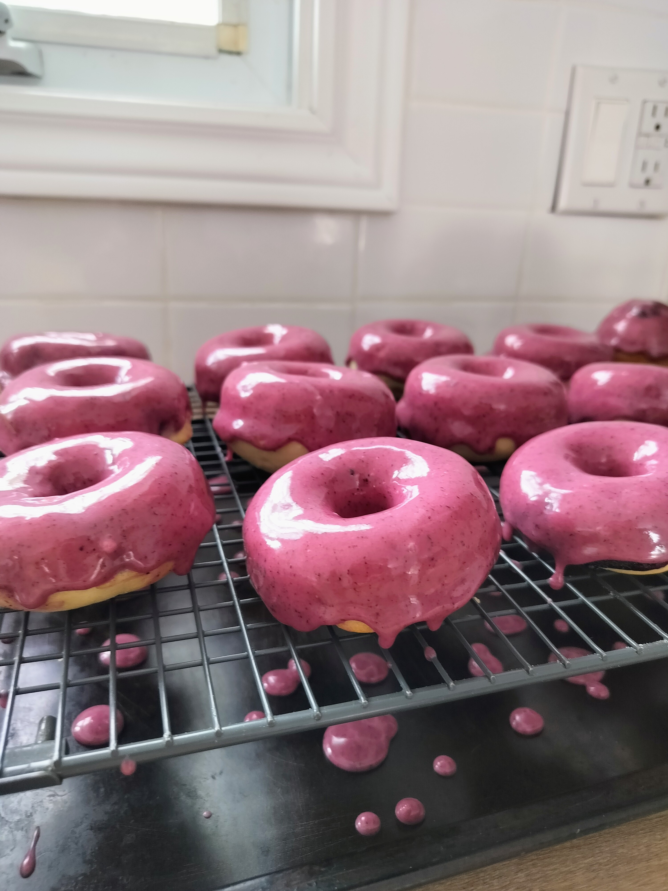

Baked Lemon Blueberry Doughnuts

Description
These fluffy baked blueberry donuts offer all the delicious satisfaction of a bakery treat without the mess or hassle of deep-frying. Crafted from a tender buttermilk batter scented with fresh lemon zest and vanilla, they are packed with fresh, juicy blueberries that burst as they bake. Piping the batter directly into the pan ensures perfectly shaped, golden rings that rise into soft, moist cakes in under ten minutes.
The crowning glory of these treats is their eye-catching, vibrant magenta glaze, made simply with powdered sugar and real blueberry juice. Dipping the cooled donuts creates a smooth, lustrous coat that sets quickly into a sweet, fruit-filled shell with beautiful drips along the sides. Beautifully balanced between zesty citrus and ripe berry flavors, these easy-to-make donuts are a guaranteed showstopper for breakfast, brunch, or dessert.
Ingredients
Doughnuts
- 3/4 cup granulated sugar
- 1/4 cup unsalted butter, melted
- 1/4 cup oil
- 1 cup buttermilk
- 2 large eggs, room temperature
- 2 teaspoons vanilla extract
- 2 teaspoons lemon zest, from one lemon
- 2 2/3 cup all-purpose flour
- 1 1/2 teaspoons baking powder
- 1/2 teaspoon salt
- 1/4 teaspoon baking soda
- 1 cup fresh blueberries
Glaze
- 2 cups powdered sugar
- 1/2 cup blueberries
- 1 teaspoon lemon juice
Steps
Make the Doughnuts
- Preheat the oven to 425°F. Grease two donut pans with butter or spray with nonstick spray.
- In a large bowl, combine the sugar, butter, and oil and whisk about 2 minutes, until smooth.
- Add the buttermilk, eggs, vanilla, and lemon zest and whisk until smooth.
- Add the flour, baking powder, salt, and baking soda, and whisk until just combined. Stir in the blueberries. (The batter will be thick.)
- Spoon the batter into a large disposable piping bag or zip-top bag. Cut off the end of the bag so the opening is about ½- ¾” wide. (Big enough for the blueberries to get through!) Pipe the batter around each donut hole. (The batter should just fill the indent because the donuts will expand and rise.)
- Bake for 8 to 9 minutes, until a toothpick inserted comes out clean. Let cool for 10 minutes before transferring the donuts from the pan to a wire rack to cool completely.
Make the glaze
- In a tall container, blend the blueberries with an immersion blender until smooth."
- In a medium bowl, mix the powdered sugar, blueberries, and lemon juice.
- Adjust the consistency by adding small amounts of lemon juice or powdered sugar. (You want the glaze to be thin enough to evenly coat your donuts, but thick enough that it will set completely.)
- When the donuts are completely cool, dip the tops into the glaze, overturn and set on a cooling rack so the glaze runs down the sides. Set aside for the glaze to set. (It happens quickly!)